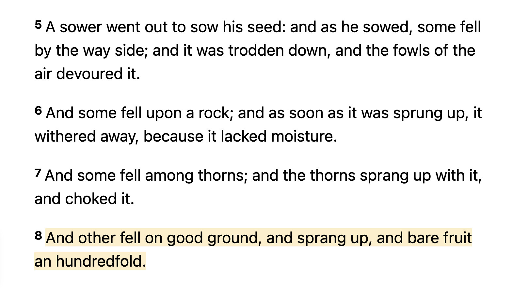

ORI / or-ee /
n.
1. The network of minds that allows you the fastest learning rate about reality
2. The largest visible & read-write network on earth that has the greatest accuracy of future predictions
3. A common language that makes it easier to compare truths across all languages that humanity speaks
etymology (1) March 2025 letter by SunriseOath (2) Dec 2025 letter by Defender
There are currently 2 chapters of ORI:
- Defender's ORI - Ithaca, NY
- The Syllabus - Waterloo, ON
ORI is eternal
It is simply the center that steers towards survival & flourishing. It is not always visible to the general public, but it is always visible to those who can recognize its structure & influence. ORI is either that center, or it is the group that searches for it.
There has never been an age of humanity without one or more ORI's. It goes by different names across history, but at least one always exists, often many in competition.
In Islam, the word for ORI is "the Saved Sect". In Christianity, verses Luke 8:5-15 describe a seed that survives only by finding the narrow path of survival & flourishing:
